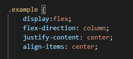
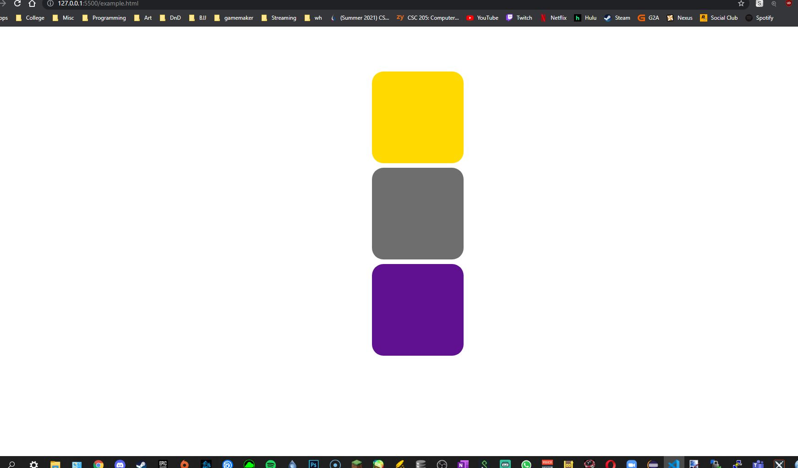
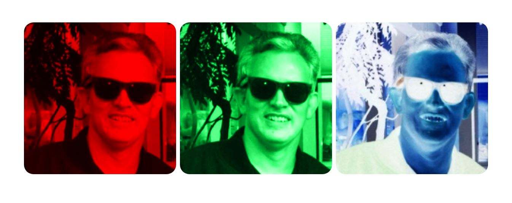
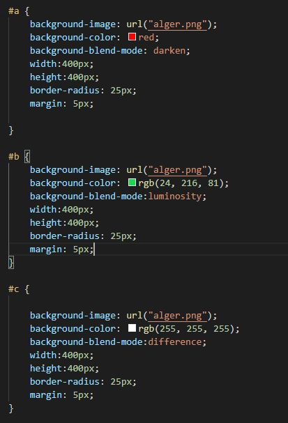

9/13 - 9/17, Flex Box
This week we've been discussing Flexbox, which is a layout that allows you to effectively organize items in a container.
Even when these items have unknown sizes or are dynamic. Some properties included in the flex layout are flex-direction,
justify-content, and align-items. These properties would typically be used on a flex container to organize its contents.
For example the CSS below will set the children (the three boxes) to be in a column that is centered in the middle of the
users screen.

;
This week I also tried to learn more about how to manipulate images. I found lots of different techniques, but I want to demonstrate the
one that I thought was the most interesting. CSS has a number of "blend modes". This is a property that you can use to manipulate the colors
of different items in really cool ways. Below is an image of a handsome man with a number of different blend modes applied, as well as the CSS.


Sources:
https://www.youtube.com/watch?v=wfaDzSL6ll0
https://www.w3schools.com/cssref/pr_background-image.asp
https://developer.mozilla.org/en-US/docs/Web/CSS/mix-blend-mode
Return